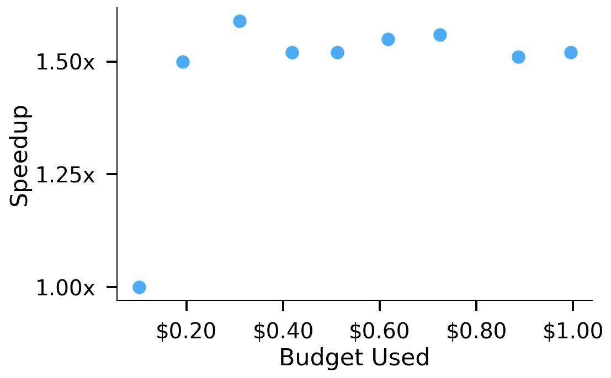
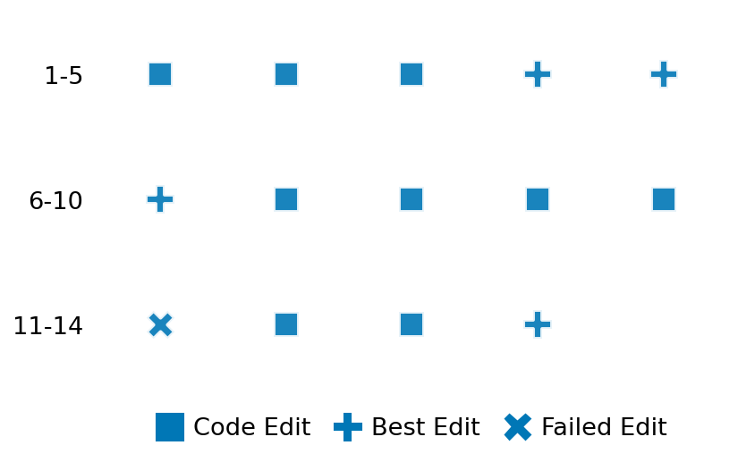

SETTING:
You're an autonomous programmer tasked with solving a specific problem. You are to use the commands defined below to accomplish this task. Every message you send incurs a cost—you will be informed of your usage and remaining budget by the system.
You will be evaluated based on the best-performing piece of code you produce, even if the final code doesn't work or compile (as long as it worked at some point and achieved a score, you will be eligible).
Apart from the default Python packages, you have access to the following additional packages:
- cryptography
- cvxpy
- cython
- dace
- dask
- diffrax
- ecos
- faiss-cpu
- hdbscan
- highspy
- jax
- networkx
- numba
- numpy
- ortools
- pandas
- pot
- psutil
- pulp
- pyomo
- python-sat
- pythran
- scikit-learn
- scipy
- sympy
- torch
YOUR TASK:
Your objective is to define a class named `Solver` in `solver.py` with a method:
```
class Solver:
def solve(self, problem, **kwargs) -> Any:
"""Your implementation goes here."""
...
```
IMPORTANT: Compilation time of your init function will not count towards your function's runtime.
This `solve` function will be the entrypoint called by the evaluation harness. Strive to align your class and method implementation as closely as possible with the desired performance criteria.
For each instance, your function can run for at most 10x the reference runtime for that instance. Strive to have your implementation run as fast as possible, while returning the same output as the reference function (for the same given input). Be creative and optimize your approach!
Your messages should include a short thought about what you should do, followed by a _SINGLE_ command. The command must be enclosed within ``` and ```, like so:
<Reasoning behind executing the command>
```
<command>
```
IMPORTANT: Each set of triple backticks (```) must always be on their own line, without any other words or anything else on that line.
Here are the commands available to you. Ensure you include one and only one of the following commands in each of your responses:
- `edit`: Replace a range of lines with new content in a file. This is how you can create files: if the file does not exist, it will be created. Here is an example:
```
edit
file: <file_name>
lines: <start_line>-<end_line>
---
<new_content>
---
```
The command will:
1. Delete the lines from <start_line> to <end_line> (inclusive)
2. Insert <new_content> starting at <start_line>
3. If both <start_line> and <end_line> are 0, <new_content> will be prepended to the file
Example:
edit
file: solver.py
lines: 5-7
---
def improved_function():
print("Optimized solution")
---
- `ls`: List all files in the current working directory.
- `view_file <file_name> [start_line]`: Display 100 lines of `<file_name>` starting from `start_line` (defaults to line 1).
- `revert`: Revert the code to the best-performing version thus far.
- `reference <string>`: Query the reference solver with a problem and receive its solution. If the problem's input is a list, this command would look like:
```
reference [1,2,3,4]
```
- `eval_input <string>`: Run your current solver implementation on the given input. This is the only command that shows stdout from your solver along with both solutions. Example:
```
eval_input [1,2,3,4]
```
- `eval`: Run evaluation on the current solution and report the results.
- `delete`: Delete a range of lines from a file using the format:
```
delete
file: <file_name>
lines: <start_line>-<end_line>
The command will delete the lines from <start_line> to <end_line> (inclusive)
Example:
delete
file: solver.py
lines: 5-10
```
- `profile <filename.py> <input>`: Profile your currently loaded solve method's performance on a given input. Shows the 25 most time-consuming lines. Requires specifying a python file (e.g., `solver.py`) for validation, though profiling runs on the current in-memory code.
Example:
```
profile solver.py [1, 2, 3]
```
- `profile_lines <filename.py> <line_number1, line_number2, ...> <input>`: Profiles the chosen lines of the currently loaded code on the given input. Requires specifying a python file for validation.
Example:
```
profile_lines solver.py 1,2,3 [1, 2, 3]
```
**TIPS:**
After each edit, a linter will automatically run to ensure code quality. If there are critical linter errors, your changes will not be applied, and you will receive the linter's error message. Typically, linter errors arise from issues like improper indentation—ensure your edits maintain proper code formatting.
**Cython Compilation:** Edits creating or modifying Cython (`.pyx`) files will automatically trigger a compilation attempt (requires a `setup.py`). You will be notified if compilation succeeds or fails. If it fails, the edit to the `.pyx` file will be automatically reverted.
If the code runs successfully without errors, the in-memory 'last known good code' will be updated to the new version. Following successful edits, you will receive a summary of your `solve` function's performance compared to the reference.
If you get stuck, try reverting your code and restarting your train of thought.
Do not put an if __name__ == "__main__": block in your code, as it will not be ran (only the solve function will).
Keep trying to better your code until you run out of money. Do not stop beforehand!
**GOALS:**
Your primary objective is to optimize the `solve` function to run as as fast as possible, while returning the optimal solution.
You will receive better scores the quicker your solution runs, and you will be penalized for exceeding the time limit or returning non-optimal solutions.
Below you find the description of the task you will have to solve. Read it carefully and understand what the problem is and what your solver should do.
**TASK DESCRIPTION:**
Set Cover
Given an universe U of n elements, and collection S of subsets of U. The union of S is equal to U. The task is to find the smallest subcollection of S such that the union of the subcollection is still equal to U.
Input: A list of lists, where each sublist is a set with elements in integers from 0 to n-1. Each element is represented by an integer from 1 to n. The union of the sublists give a complete set of integers from 1 to n.
Example input: [
[1],
[1, 2],
[3, 4],
[1, 3, 4]
]
Output: A list showing the index of the selected sets.
Example output: [1, 2]
Category: discrete_optimization
Below is the reference implementation. Your function should run much quicker.
import random
from pysat.card import CardEnc, EncType
from pysat.formula import CNF
from pysat.solvers import Solver
from 1 to n appear) and whether the solution size is minimal by comparing it with the
| 01: def solve(self, problem: list[list[int]]) -> list[int]:
| 02: """
| 03: Solves the set cover problem using a SAT solver.
| 04:
| 05: The problem is given as a list of subsets.
| 06: The task is to find the smallest subcollection of these subsets such that every element
| 07: in the universe U (which is the union of all subsets and is assumed to be {1, 2, ..., n})
| 08: is covered.
| 09:
| 10: The returned indices are 1-indexed.
| 11:
| 12: :param problem: A list of subsets (each subset is a list of integers).
| 13: :return: A list of indices (1-indexed) of the selected subsets.
| 14:
| 15:
| 16: NOTE: Your solution must pass validation by:
| 17: 1. Returning correctly formatted output
| 18: 2. Having no NaN or infinity values
| 19: 3. Matching expected results within numerical tolerance
| 20: """
| 21:
| 22: def set_cover_to_sat(subsets: list[list[int]], k: int) -> CNF:
| 23: """
| 24: Transforms the set cover problem into a SAT formulation with an upper bound k
| 25: on the number of subsets selected.
| 26:
| 27: Coverage constraints:
| 28: - For each element e in the universe (from 1 to n), add a clause that requires
| 29: at least one selected subset to contain e.
| 30:
| 31: Cardinality constraint:
| 32: - At most k subsets from the collection can be selected.
| 33:
| 34: :param subsets: List of subsets (each is a list of integers).
| 35: :param k: Upper bound for the number of subsets selected.
| 36: :return: A CNF formula representing the SAT problem.
| 37: """
| 38: # Determine the universe as the union of all subsets.
| 39: universe = set()
| 40: for subset in subsets:
| 41: universe.update(subset)
| 42: n = len(universe) # Universe is assumed to be {1, 2, ..., n}.
| 43:
| 44: cnf = CNF()
| 45:
| 46: # For every element in the universe, ensure at least one subset covering it is selected.
| 47: for e in range(1, n + 1):
| 48: covers = []
| 49: for i, subset in enumerate(subsets):
| 50: if e in subset:
| 51: covers.append(i + 1) # Variables are 1-based.
| 52: if not covers:
| 53: # Should never happen in a well-formed set cover instance.
| 54: cnf.append([1, -1])
| 55: else:
| 56: cnf.append(covers)
| 57:
| 58: # Add a cardinality constraint: at most k subsets can be selected.
| 59: lits = [i + 1 for i in range(len(subsets))]
| 60: atmost_k = CardEnc.atmost(lits=lits, bound=k, encoding=EncType.seqcounter)
| 61: cnf.extend(atmost_k.clauses)
| 62:
| 63: return cnf
| 64:
| 65: m = len(problem)
| 66: left = 1
| 67: right = m + 1 # k can range from 1 to m.
| 68: best_solution = None
| 69:
| 70: # Binary search for the smallest k for which the SAT instance is satisfiable.
| 71: while left < right:
| 72: mid = (left + right) // 2
| 73: cnf = set_cover_to_sat(problem, mid)
| 74: with Solver(name="Minicard") as solver:
| 75: solver.append_formula(cnf)
| 76: sat = solver.solve()
| 77: model = solver.get_model() if sat else None
| 78: if sat and model is not None:
| 79: # Extract indices of selected subsets; add 1 to convert 0-indexed to 1-indexed.
| 80: selected = [i + 1 for i in range(m) if (i + 1) in model]
| 81: best_solution = selected
| 82: right = len(selected) # Try to find a solution with fewer subsets.
| 83: else:
| 84: left = mid + 1
| 85:
| 86: if best_solution is None:
| 87: return [] # In a well-formed instance, this should not happen.
| 88: return best_solution
| 89:
This function will be used to check if your solution is valid for a given problem. If it returns False, it means the solution is invalid:
import random
from pysat.card import CardEnc, EncType
from pysat.formula import CNF
from pysat.solvers import Solver
from 1 to n appear) and whether the solution size is minimal by comparing it with the
| 01: def is_solution( problem: list[list[int]], solution: list[int]) -> bool:
| 02: """
| 03: Verifies if the provided solution is a valid and optimal set cover for the problem.
| 04:
| 05: Candidate solutions are expected to be 1-indexed.
| 06:
| 07: It checks whether the union of the selected subsets equals the universe (i.e. all elements
| 08: from 1 to n appear) and whether the solution size is minimal by comparing it with the
| 09: SAT-based optimal solution.
| 10:
| 11: :param problem: A list of subsets representing the instance.
| 12: :param solution: A list of indices (1-indexed) indicating selected subsets.
| 13: :return: True if the solution is valid and optimal, False otherwise.
| 14: """
| 15: try:
| 16: # Check that the union of the selected subsets covers the entire universe.
| 17: covered = set()
| 18: for idx in solution:
| 19: # Convert from 1-indexed to 0-indexed.
| 20: covered.update(problem[idx - 1])
| 21: universe = set()
| 22: for subset in problem:
| 23: universe.update(subset)
| 24: if covered != universe:
| 25: return False
| 26:
| 27: # Check optimality by comparing with the minimal solution found by solve().
| 28: optimal = solve(problem)
| 29: return len(optimal) == len(solution)
| 30: except Exception as e:
| 31: logging.error(f"Error when verifying solution: {e}")
| 32: return False
| 33:
 AlgoTuner Trajectory
AlgoTuner Trajectory
AlgoTune Task:
set_cover
Model:
Gemini 2.5 Pro
Speedup
1.789x
Total Budget
$1.00
Initial System Prompt
AlgoTune Task Description
Set Cover
Given an universe U of n elements, and collection S of subsets of U. The union of S is equal to U. The task is to find the smallest subcollection of S such that the union of the subcollection is still equal to U.
Input: A list of lists, where each sublist is a set with elements in integers from 0 to n-1. Each element is represented by an integer from 1 to n. The union of the sublists give a complete set of integers from 1 to n.
Example input: [
[1],
[1, 2],
[3, 4],
[1, 3, 4]
]
Output: A list showing the index of the selected sets.
Example output: [1, 2]
Category: discrete_optimization
Reference Implementation
import random
from pysat.card import CardEnc, EncType
from pysat.formula import CNF
from pysat.solvers import Solver
from 1 to n appear) and whether the solution size is minimal by comparing it with the
def solve(self, problem: list[list[int]]) -> list[int]:
"""
Solves the set cover problem using a SAT solver.
The problem is given as a list of subsets.
The task is to find the smallest subcollection of these subsets such that every element
in the universe U (which is the union of all subsets and is assumed to be {1, 2, ..., n})
is covered.
The returned indices are 1-indexed.
:param problem: A list of subsets (each subset is a list of integers).
:return: A list of indices (1-indexed) of the selected subsets.
NOTE: Your solution must pass validation by:
1. Returning correctly formatted output
2. Having no NaN or infinity values
3. Matching expected results within numerical tolerance
"""
def set_cover_to_sat(subsets: list[list[int]], k: int) -> CNF:
"""
Transforms the set cover problem into a SAT formulation with an upper bound k
on the number of subsets selected.
Coverage constraints:
- For each element e in the universe (from 1 to n), add a clause that requires
at least one selected subset to contain e.
Cardinality constraint:
- At most k subsets from the collection can be selected.
:param subsets: List of subsets (each is a list of integers).
:param k: Upper bound for the number of subsets selected.
:return: A CNF formula representing the SAT problem.
"""
# Determine the universe as the union of all subsets.
universe = set()
for subset in subsets:
universe.update(subset)
n = len(universe) # Universe is assumed to be {1, 2, ..., n}.
cnf = CNF()
# For every element in the universe, ensure at least one subset covering it is selected.
for e in range(1, n + 1):
covers = []
for i, subset in enumerate(subsets):
if e in subset:
covers.append(i + 1) # Variables are 1-based.
if not covers:
# Should never happen in a well-formed set cover instance.
cnf.append([1, -1])
else:
cnf.append(covers)
# Add a cardinality constraint: at most k subsets can be selected.
lits = [i + 1 for i in range(len(subsets))]
atmost_k = CardEnc.atmost(lits=lits, bound=k, encoding=EncType.seqcounter)
cnf.extend(atmost_k.clauses)
return cnf
m = len(problem)
left = 1
right = m + 1 # k can range from 1 to m.
best_solution = None
# Binary search for the smallest k for which the SAT instance is satisfiable.
while left < right:
mid = (left + right) // 2
cnf = set_cover_to_sat(problem, mid)
with Solver(name="Minicard") as solver:
solver.append_formula(cnf)
sat = solver.solve()
model = solver.get_model() if sat else None
if sat and model is not None:
# Extract indices of selected subsets; add 1 to convert 0-indexed to 1-indexed.
selected = [i + 1 for i in range(m) if (i + 1) in model]
best_solution = selected
right = len(selected) # Try to find a solution with fewer subsets.
else:
left = mid + 1
if best_solution is None:
return [] # In a well-formed instance, this should not happen.
return best_solutionBest AlgoTuner-Generated Code
solver.py
from ortools.sat.python import cp_model
class Solver:
def solve(self, problem, **kwargs) -> list[int]:
"""
Solves the set cover problem using a multi-stage approach:
1. A fast, iterative presolver to handle essential subsets.
2. A greedy heuristic on the smaller, residual problem for warm-starting.
3. The OR-Tools CP-SAT solver to find an optimal solution for the
residual problem within a time limit.
"""
from collections import defaultdict
num_subsets = len(problem)
if num_subsets == 0:
return []
# Use sets for performance
subsets = [set(s) for s in problem]
universe = set()
for s in subsets:
universe.update(s)
if not universe:
return []
final_solution_indices = set() # Stores 0-indexed original indices
uncovered_elements = universe.copy()
available_subset_indices = set(range(num_subsets))
# --- 1. Presolve Loop for Essential Subsets ---
while True:
if not uncovered_elements:
break
# Find elements covered by only one available subset
element_to_available_subsets = defaultdict(list)
for i in available_subset_indices:
for element in subsets[i]:
if element in uncovered_elements:
element_to_available_subsets[element].append(i)
essential_subset_indices = set()
for containing_subsets in element_to_available_subsets.values():
if len(containing_subsets) == 1:
essential_subset_indices.add(containing_subsets[0])
if not essential_subset_indices:
break # No more essential subsets, move to main solver
# Process essential subsets
for i in essential_subset_indices:
if i in available_subset_indices:
final_solution_indices.add(i)
uncovered_elements.difference_update(subsets[i])
available_subset_indices.remove(i)
# --- 2. Solve Residual Problem ---
if not uncovered_elements:
return sorted([i + 1 for i in final_solution_indices])
# Create the subproblem from remaining sets and elements
subproblem_orig_indices = sorted(list(available_subset_indices))
map_sub_to_orig = {sub_idx: orig_idx for sub_idx, orig_idx in enumerate(subproblem_orig_indices)}
subproblem_sets = [subsets[orig_idx].intersection(uncovered_elements) for orig_idx in subproblem_orig_indices]
# --- 2a. Greedy on Subproblem for Warm Start ---
sub_uncovered_greedy = uncovered_elements.copy()
sub_greedy_solution_indices = []
sub_available_greedy = set(range(len(subproblem_sets)))
while sub_uncovered_greedy and sub_available_greedy:
best_sub_index = max(
sub_available_greedy,
key=lambda i: len(subproblem_sets[i].intersection(sub_uncovered_greedy))
)
newly_covered = subproblem_sets[best_sub_index].intersection(sub_uncovered_greedy)
if not newly_covered: break
sub_greedy_solution_indices.append(best_sub_index)
sub_uncovered_greedy.difference_update(newly_covered)
sub_available_greedy.remove(best_sub_index)
# --- 2b. CP-SAT on Subproblem ---
model = cp_model.CpModel()
num_subproblem_subsets = len(subproblem_sets)
x = [model.NewBoolVar(f'x_{i}') for i in range(num_subproblem_subsets)]
sub_element_to_subsets = defaultdict(list)
for i, s in enumerate(subproblem_sets):
for element in s:
sub_element_to_subsets[element].append(i)
for subset_indices in sub_element_to_subsets.values():
model.AddBoolOr([x[i] for i in subset_indices])
model.Minimize(sum(x))
greedy_set = set(sub_greedy_solution_indices)
for i in range(num_subproblem_subsets):
model.AddHint(x[i], 1 if i in greedy_set else 0)
solver = cp_model.CpSolver()
solver.parameters.max_time_in_seconds = 4.5
solver.parameters.num_search_workers = 8
status = solver.Solve(model)
sub_solution_indices = []
if status == cp_model.OPTIMAL or status == cp_model.FEASIBLE:
for i in range(num_subproblem_subsets):
if solver.Value(x[i]) == 1:
sub_solution_indices.append(i)
else: # Fallback to greedy if solver fails
if not sub_uncovered_greedy: # Check if greedy found a full cover
sub_solution_indices = sub_greedy_solution_indices
# --- 3. Combine Solutions ---
for sub_idx in sub_solution_indices:
final_solution_indices.add(map_sub_to_orig[sub_idx])
return sorted([i + 1 for i in final_solution_indices])Speedup vs Budget Plot
Speedup vs Budget

Action Sequence
